TEDxZurich 2015 - Re-Imagining Everything // ART DIRECTION
About TEDx
TEDxZurich is a local, independent-organized event that brings people together to experience the TED spirit. This annual conference with up to 500 selected participants and speakers from all around the globe took place at the SRF studios in Zurich with inspiring speeches and a versatile entertainment program in between.
Overview
In 2015 I became the Art Director of TEDxZurich. My first event was named "Re-imagining Everything". An event of unconventionally thinking and to open up new perspectives.
Responsibilities
- Multi-Channel Design Concepts and Implementation
- Ensure the TEDx brand consistency and quality
- Connecting
People through Creative Ideas
... and more
Result
Under consideration of the TEDx guidelines, I developed and directed the look and feel of the conference. A modern mix of hand-made, water-colored shapes that morph vividly into abstract, dancing human beings.
Award
A big applause goes out to our video partner Kompost TV who won the CICLOPE 2016 Gold Award in the category "Title Sequence" with our TEDxZurich opener video.
Impressions
 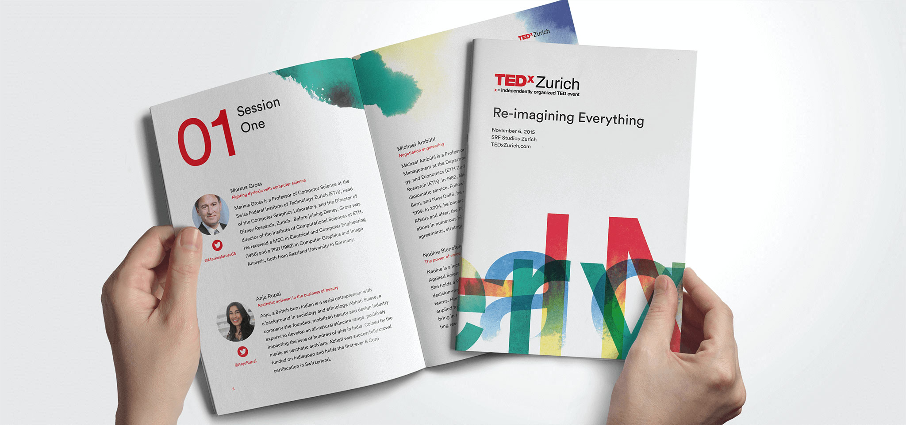
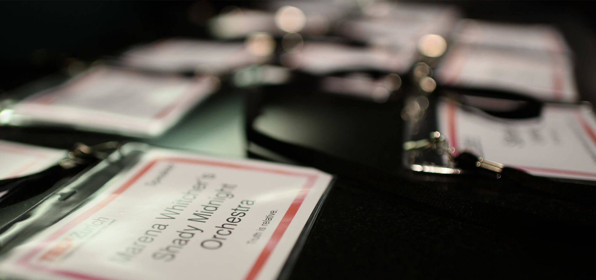
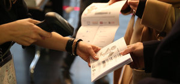
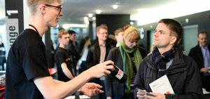
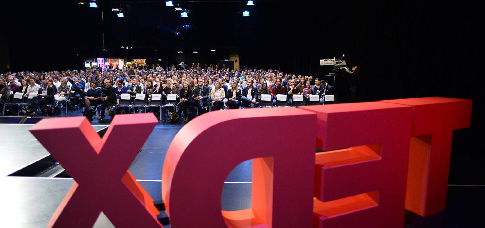
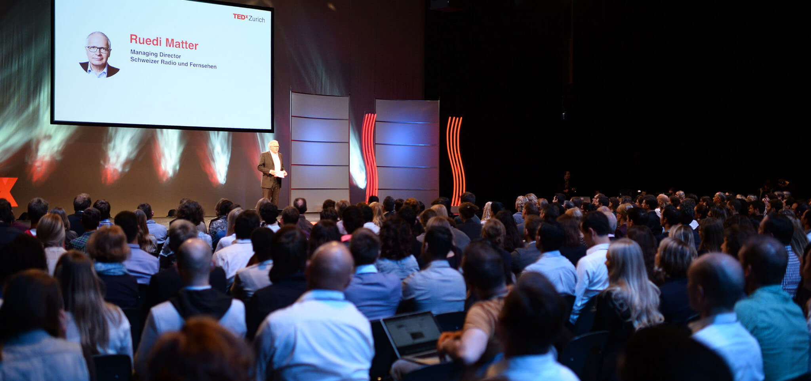
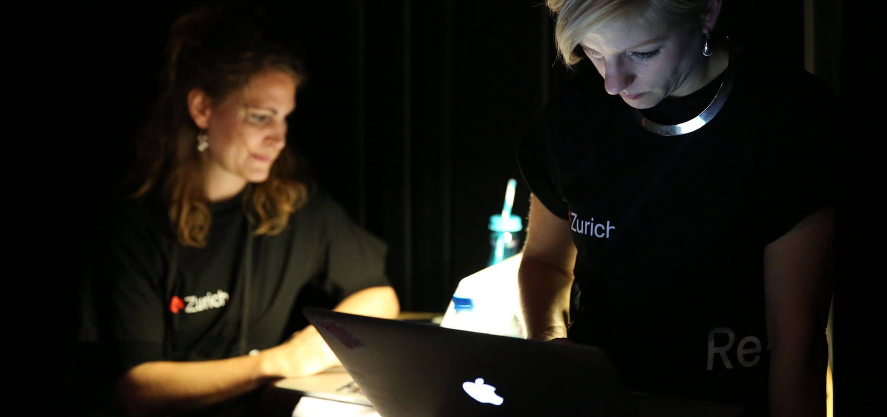
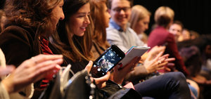
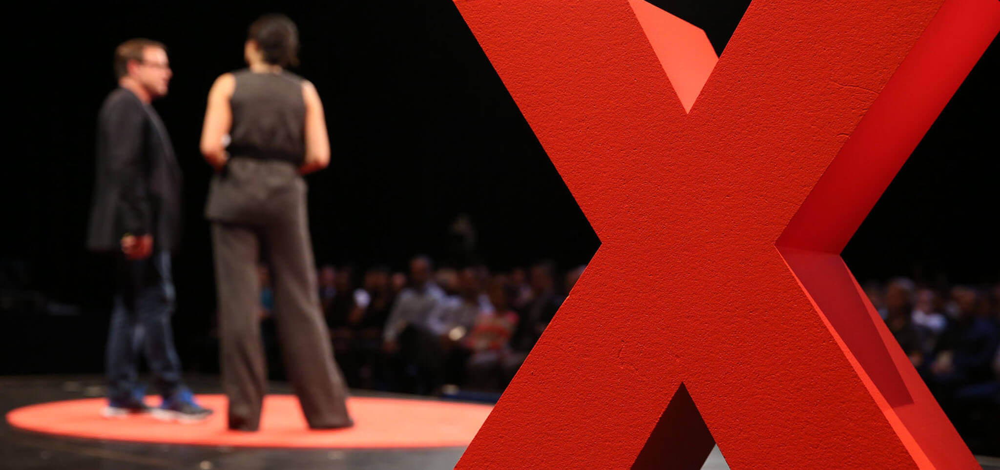
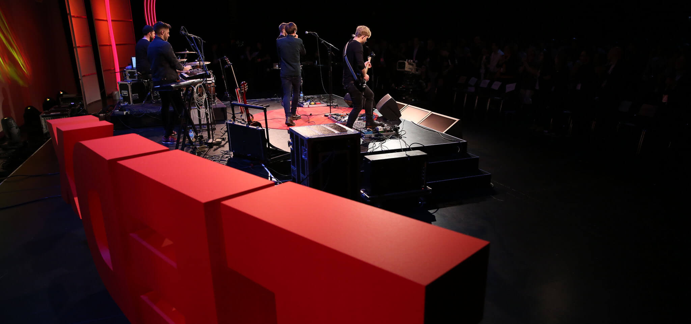
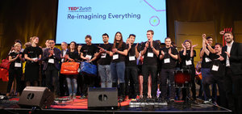
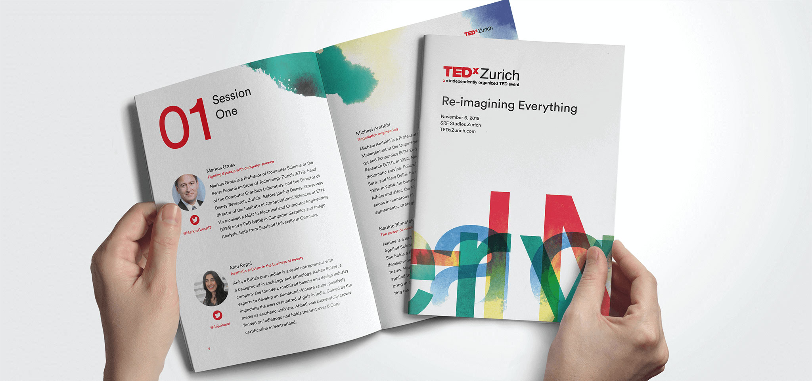
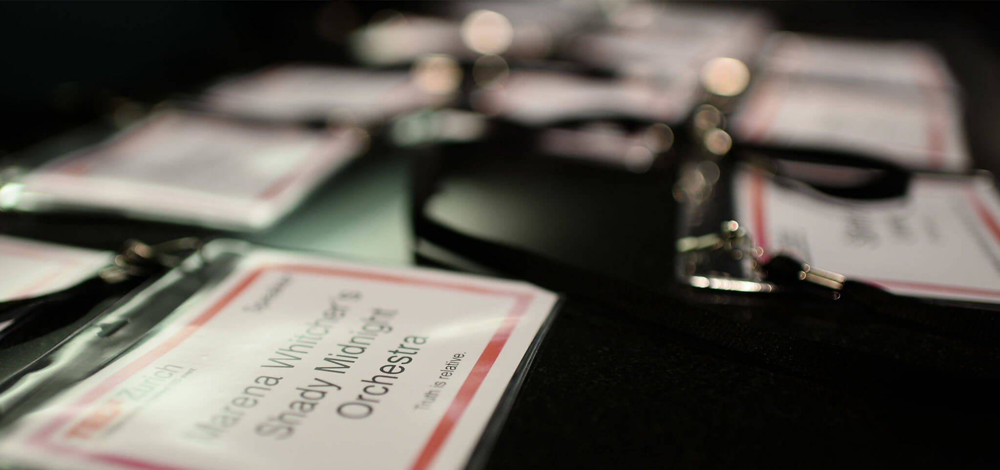
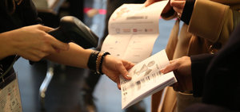
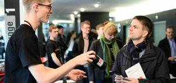
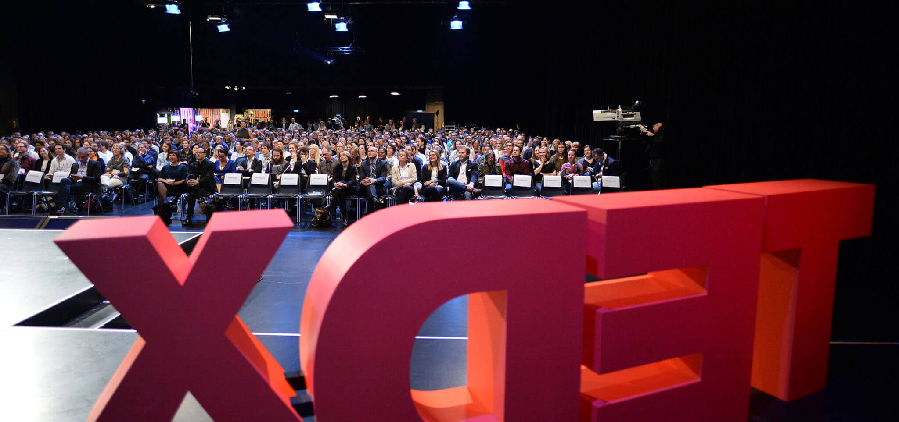
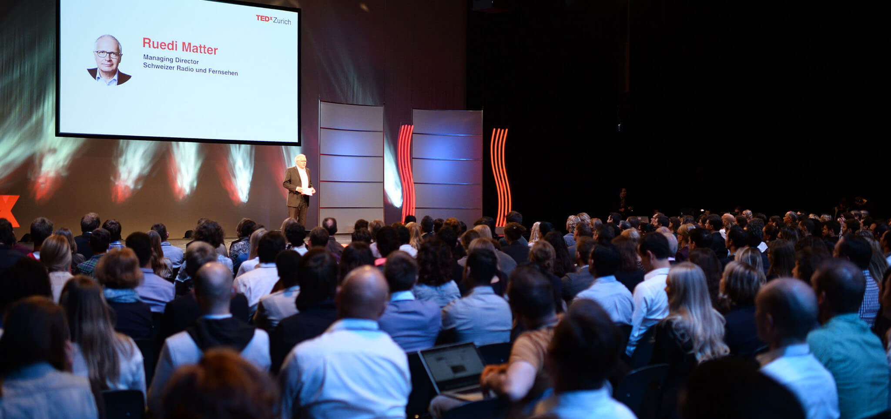
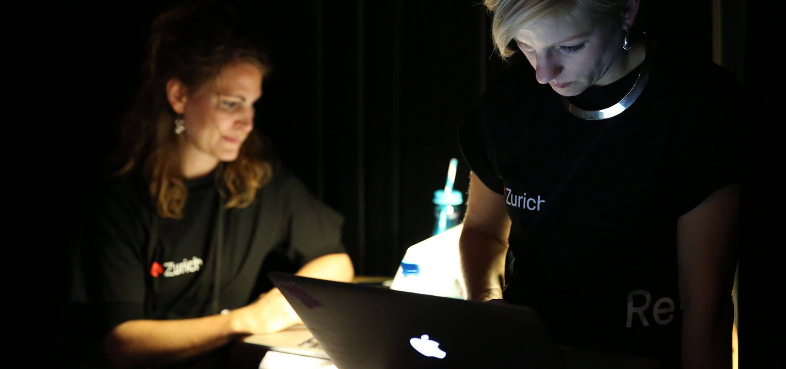
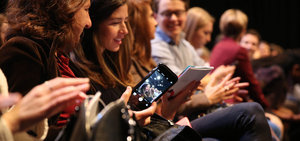
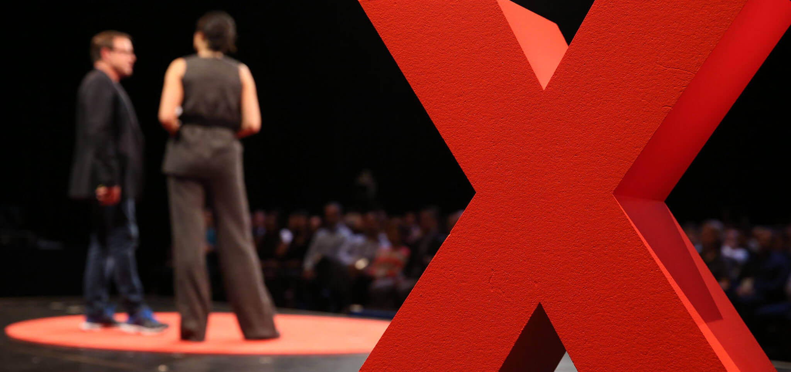
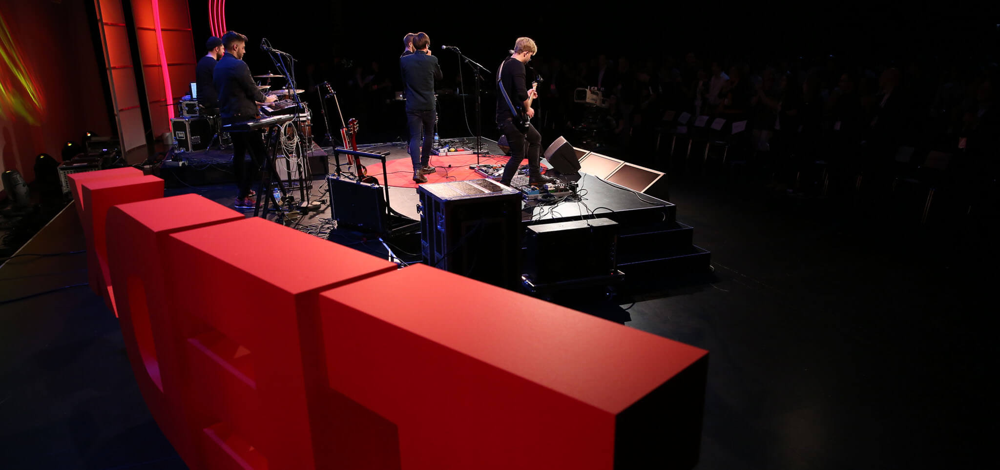
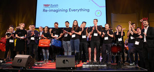